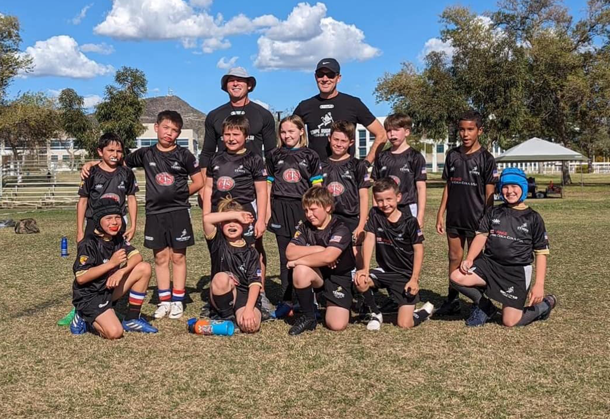
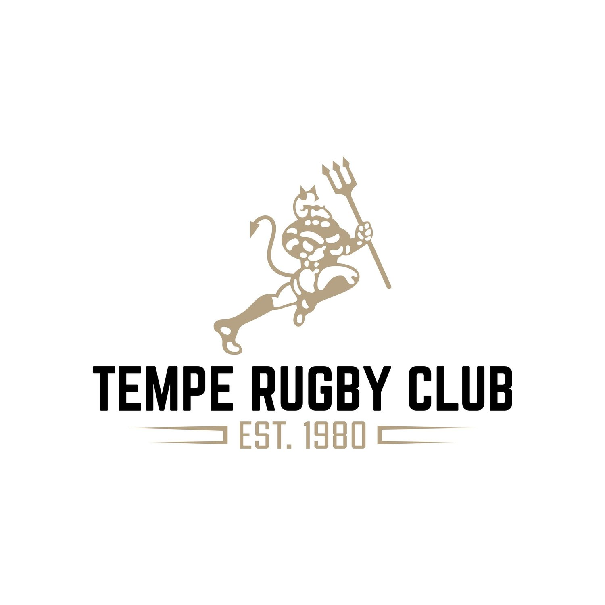
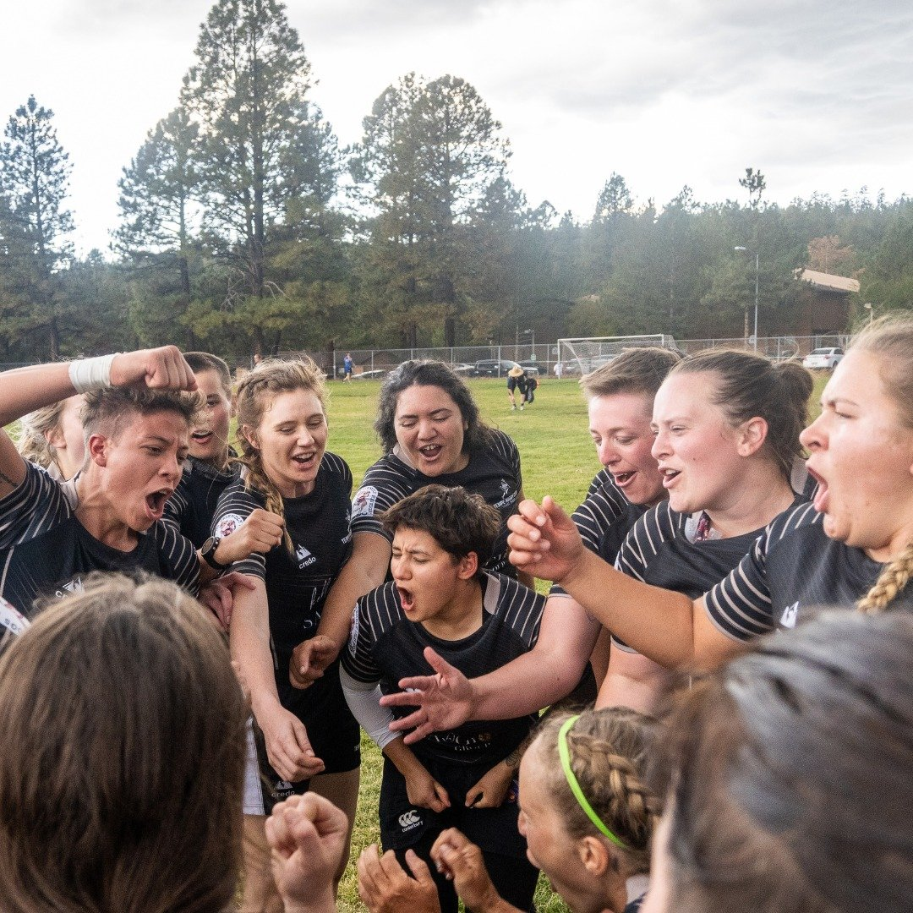
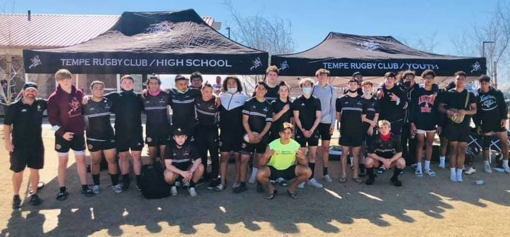
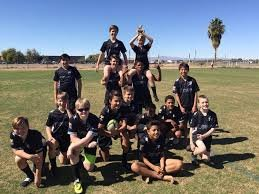
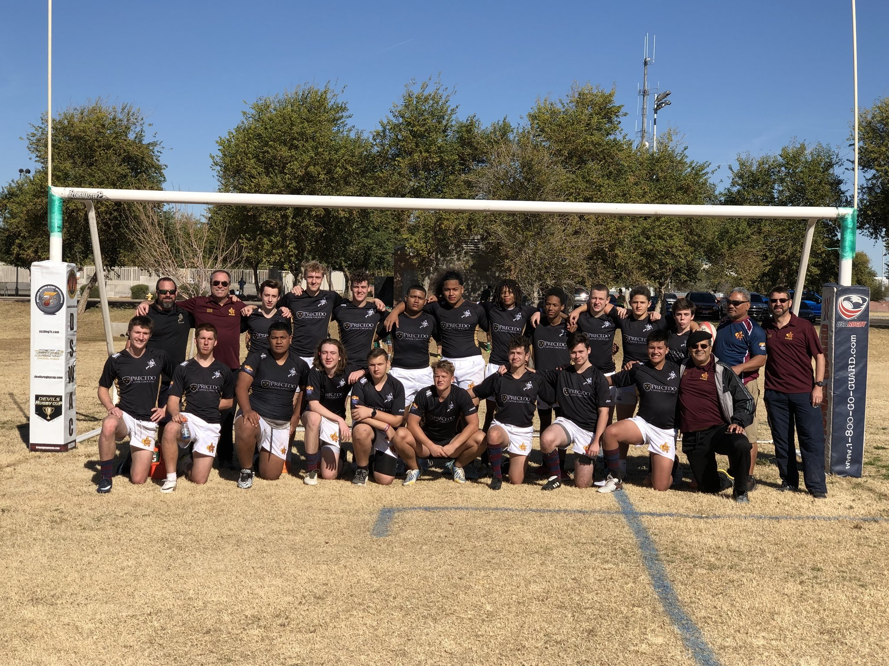
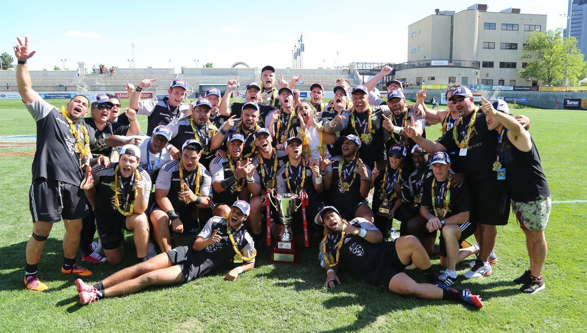
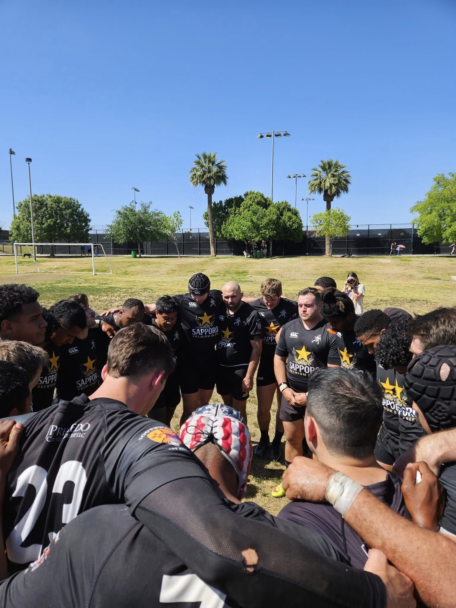

U8 — Flag rugby
A fun introduction to rugby, developing movement, coordination, teamwork, and confidence without tackling.


Tempe Rugby Club · Jr. Devils
Boys. Girls. One Club. Endless Possibilities.
From first-time players discovering the game to high school athletes chasing championship opportunities, the Jr. Devils build confidence, character, teamwork, and a lifelong love of rugby.
Join a club with a proud legacy and a pathway for the next generation.
Established 1980

Meet the Jr. Devils
Rugby is more than a game. It’s where young athletes discover their potential, build lasting friendships, and learn what it means to be part of a team.
The Tempe Rugby Club Jr. Devils bring boys and girls together through a youth rugby program built around athletic development, sportsmanship, resilience, and community.
Whether your child is picking up a rugby ball for the first time or ready to take their game to the next level, there’s a place for them here.
Find your teamFind your pathway
From introductory flag rugby to competitive high school tackle rugby, the Jr. Devils offer opportunities for athletes to grow with the game.

A fun introduction to rugby, developing movement, coordination, teamwork, and confidence without tackling.

Build fundamental rugby skills, learn game awareness, and develop a strong foundation through team play.
Develop technical skills, tactical understanding, physical confidence, and a stronger competitive mindset.

Take the next step with structured training, competitive match play, leadership development, and opportunities to pursue higher levels of rugby.
Eligibility and team placement are subject to current USA Rugby age-grade rules and club availability.
Explore teams & registerThe pathway to the Olympics
Rugby opens doors to opportunities that extend far beyond the field. With dedication, coaching, and consistent development, young athletes can build the skills and experience needed to pursue increasingly competitive levels of the sport.
Learn the fundamentals, find your confidence, and discover the excitement of rugby.
Build technical ability, fitness, game awareness, and teamwork through training and match experience.
Challenge yourself in league matches and tournaments while learning to perform under pressure.
Explore advanced development opportunities, representative rugby, and potential pathways toward elite competition.
The Olympic dream begins with a first step. At the Jr. Devils, that step starts with learning, playing, and growing together.
Presented as an aspirational pathway, not a guaranteed route to Olympic selection. Named development programs should be confirmed by the club.
Why rugby?
Learn to trust your abilities, make decisions, and take on new challenges.
Discover how different strengths come together to achieve something bigger.
Develop discipline, determination, and the ability to bounce back.
Find your place in a team that values effort, commitment, and respect.
Build communication skills, accountability, and confidence on and off the pitch.
Be part of a rugby community that celebrates progress, supports teammates, and grows together.
New to rugby? No problem. Players of different experience levels can explore opportunities to get involved.
Why families choose rugbyClub honors & legacy
The Jr. Devils are part of the Tempe Rugby Club legacy, established in 1980 and built on competitive spirit, dedicated coaching, and a strong sense of community.
2016 National Championship, senior men’s program. Tempe has also earned multiple national championship appearances.
Now, the next generation has an opportunity to learn from that tradition, build its own achievements, and carry the club’s values forward.


The season at a glance
From preseason practices to spring league matches, every season brings opportunities to learn, improve, and take the field as a team.
October – December
Weekly preseason practices and match-day opportunities across the Phoenix metro area.
January – May
A new season of skill development, team preparation, and competitive rugby.
Training locations. Discovery Park in Gilbert, Tempe Sports Complex, Benedict Park, and other locations as announced by the club.
View the full season scheduleLife at the Jr. Devils
Every practice, every try, every celebration, and every teammate contributes to the Jr. Devils story.
Upcoming events
Stay connected with practices, matches, registration deadlines, and special club events. Dates below follow the current club schedule and should be confirmed before publishing.
Fall preseason
Youth & high school rugby
Thursdays, 6:00–8:00 pm. Discovery Park, Tempe Sports Complex, or Benedict Park.
Spring league
Youth & high school rugby
Saturdays across Mesa, Gilbert, Phoenix, Scottsdale, and Tempe. Kickoff times announced by the club.
All season
Community
Team gatherings, volunteer opportunities, and club community activities.
Sponsors & community partners
The Jr. Devils grow through the support of families, local businesses, and community partners who believe in the power of youth sports.
Interested in supporting the next generation? Partner with the Jr. Devils and become part of our rugby community.
Registration & fees
Ready to give rugby a try? Take the first step toward joining the Tempe Rugby Club Jr. Devils. Whether you’re new to the game or ready for another season, registration is the place to begin.
Find the appropriate youth or high school program.
Check eligibility, fees, equipment requirements, and season information.
Continue to the club’s official registration system and submit the required information.
Follow the club’s instructions for practice schedules, team communications, and your first session.
Registration fees: view current fees and any applicable additional costs through the official registration portal.
The current club site references the 2025–2026 season. Confirm the season, dates, and fees before publishing.
Interest form
Tell us a little about your athlete, and the Jr. Devils team can help you explore the right program.
Tempe Rugby Club — Jr. Devils
The next great rugby story could start with you. Build confidence. Make friends. Learn the game. Become part of something bigger.